센터소개
ORVELLA REHABILITATION CENTER
SRP센터 스텝 소개
작은 동작부터 차근차근
편안하게 연습하는 시간을
함께 만들겠습니다.
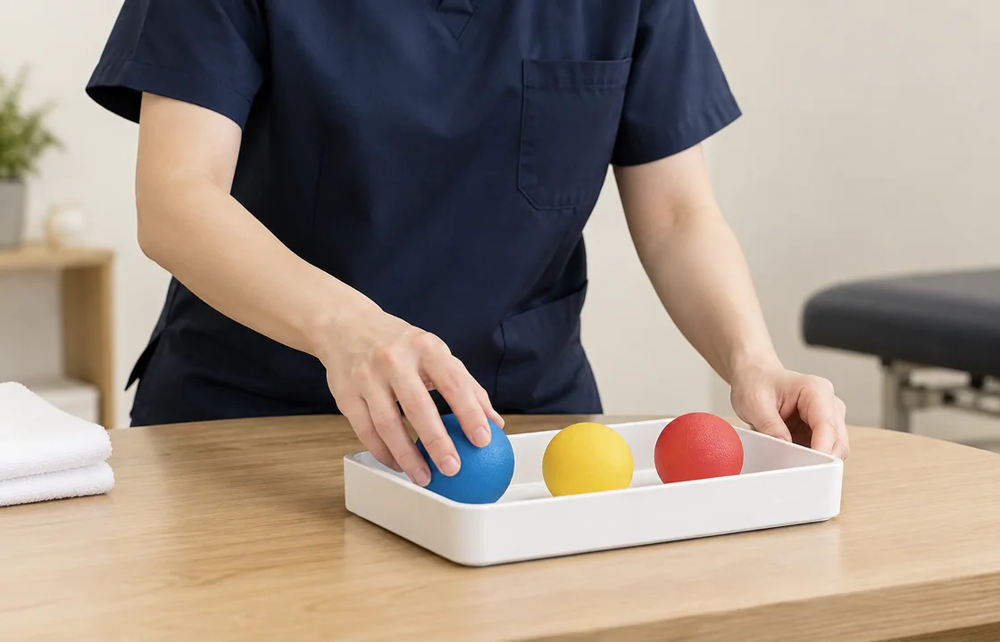
현재의 움직임을 살피고
생활에 필요한 동작부터
함께 익히겠습니다.
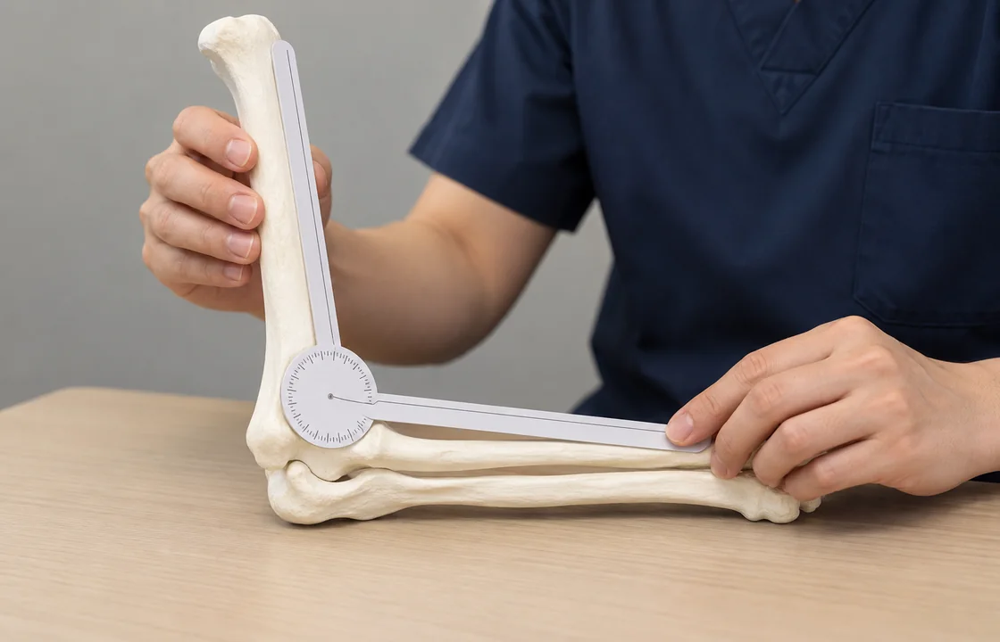
몸이 보내는 신호를 듣고
무리하지 않는 회복을
도와드리겠습니다.
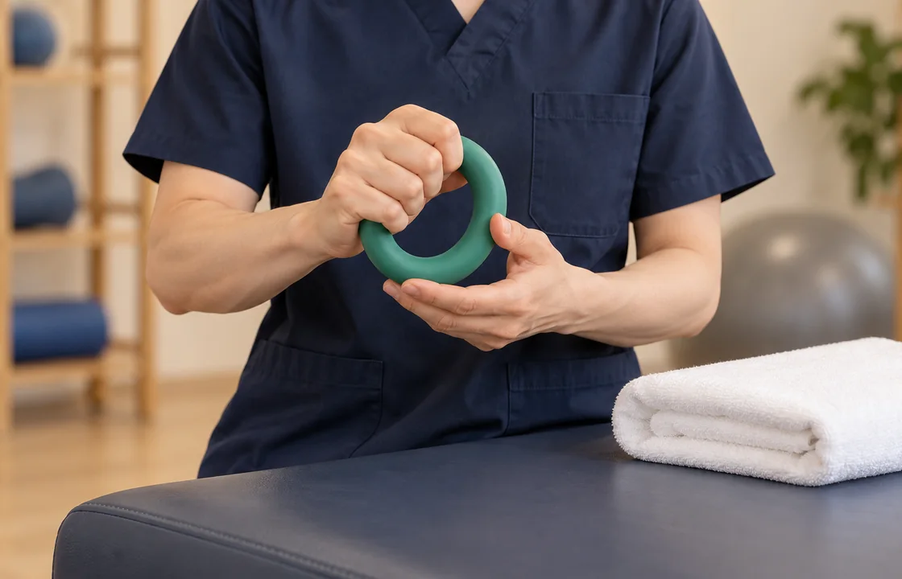
불편한 움직임을 함께 살피며
안전하게 시작하는 재활을
준비하겠습니다.
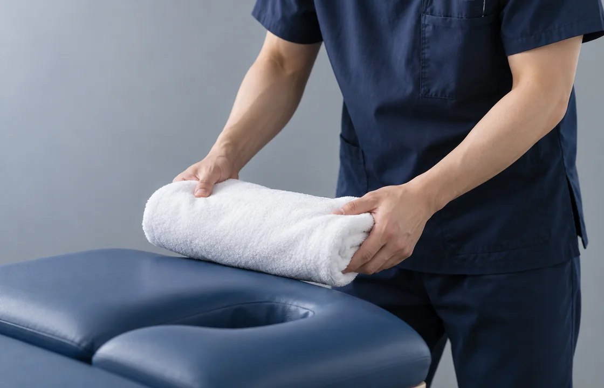
오늘 할 수 있는 움직임에서
다음 걸음의 자신감을
찾아드리겠습니다.
즐겁게 이어갈 수 있는
나만의 운동 습관을
함께 찾아가겠습니다.
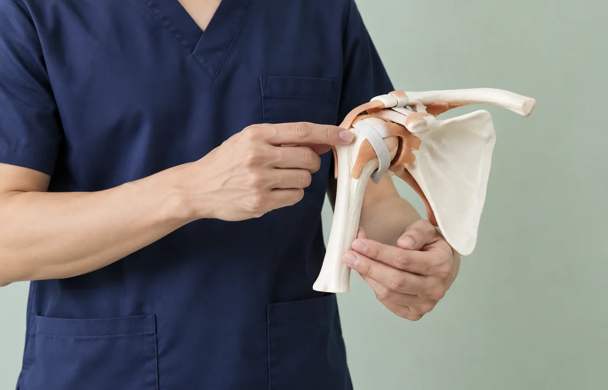
혼자서는 어려웠던 운동도
함께하는 한 걸음부터
시작하겠습니다.
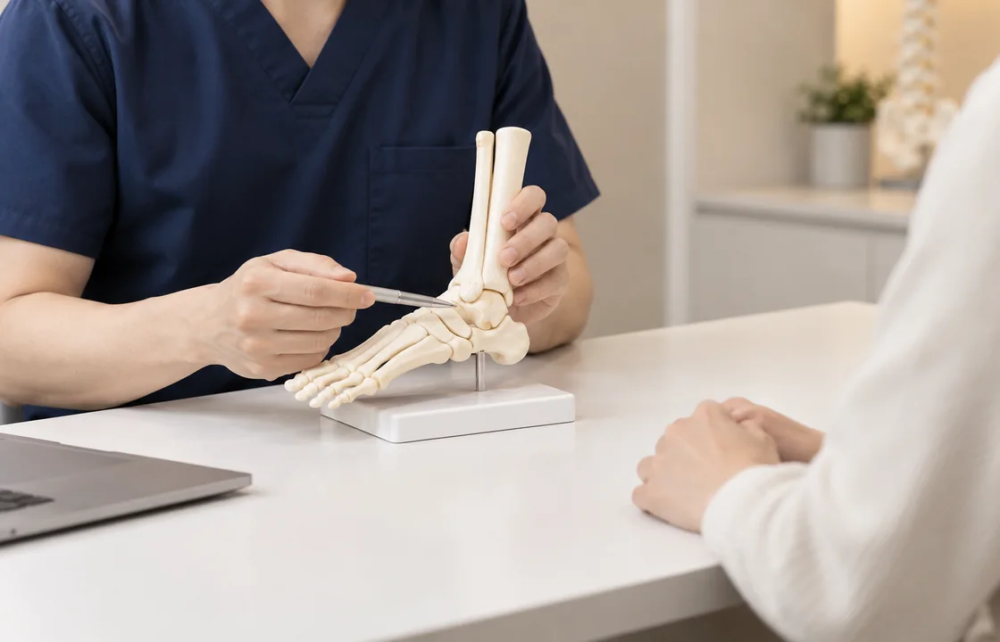
작은 변화를 꾸준히 살피며
생활 속의 활동을
넓혀가겠습니다.
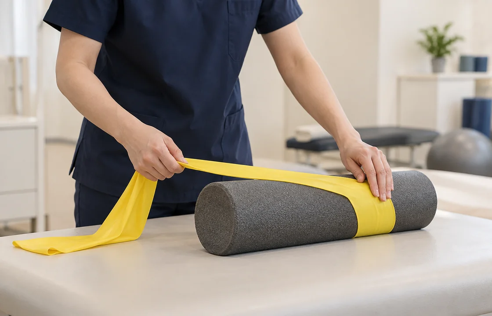
운동하는 시간을
나를 돌보는 시간으로
만들어가겠습니다.
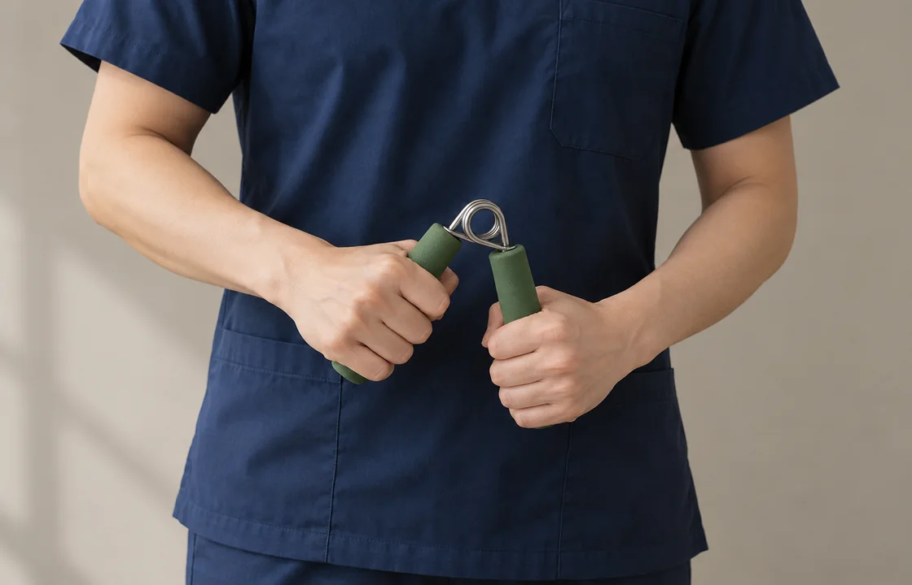
익숙한 일상으로 돌아가는 길에
꾸준한 움직임의 힘을
보태겠습니다.
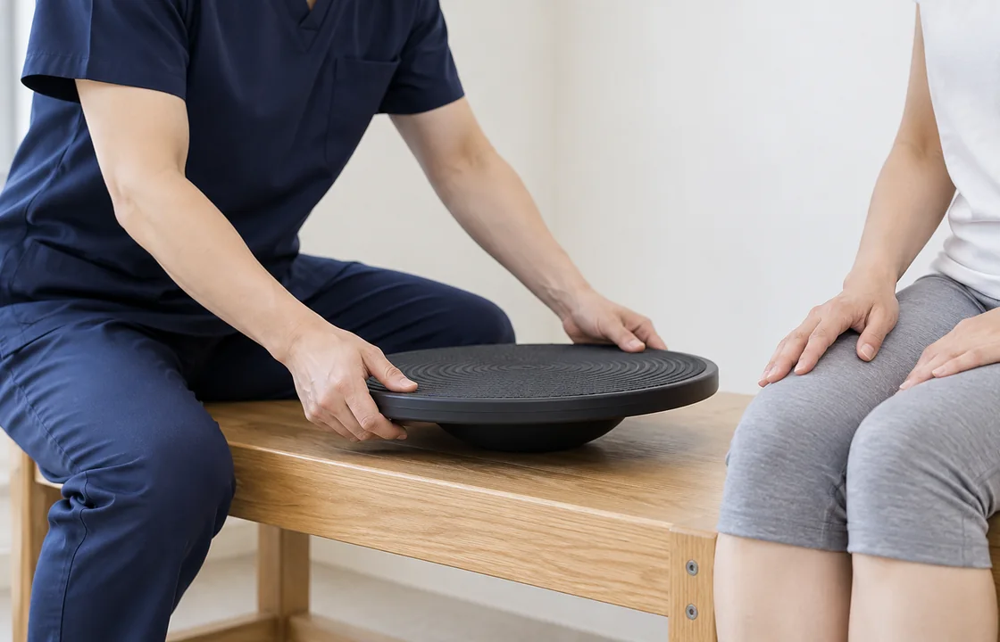
각자의 속도를 존중하며
몸에 맞는 운동 방법을
함께 연습하겠습니다.
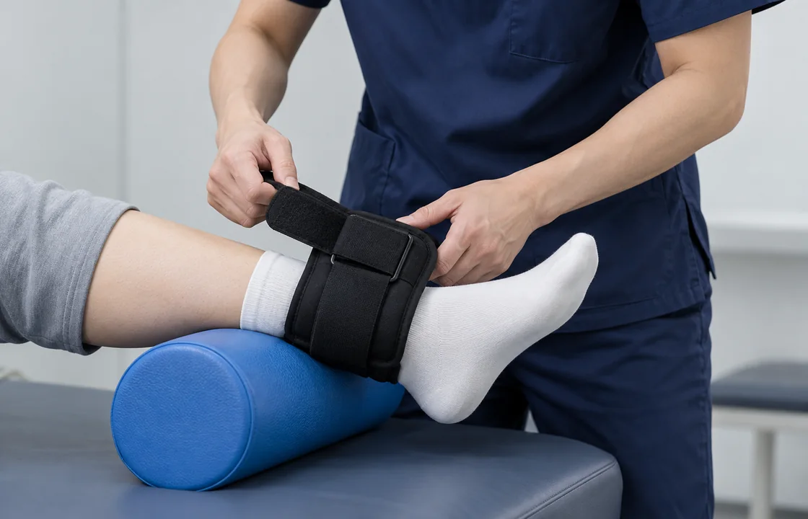
걱정되는 동작을 먼저 듣고
이해하기 쉬운 운동으로
설명하겠습니다.
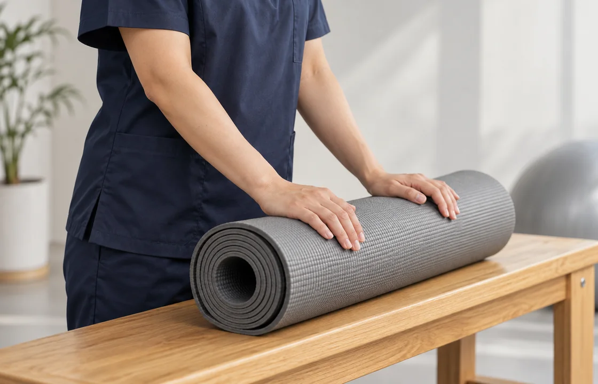
오늘의 컨디션을 확인하며
부담 없이 이어가는 운동을
돕겠습니다.
처음 방문하신 순간부터
차분하고 알기 쉬운 안내로
함께하겠습니다.
Total 20 건